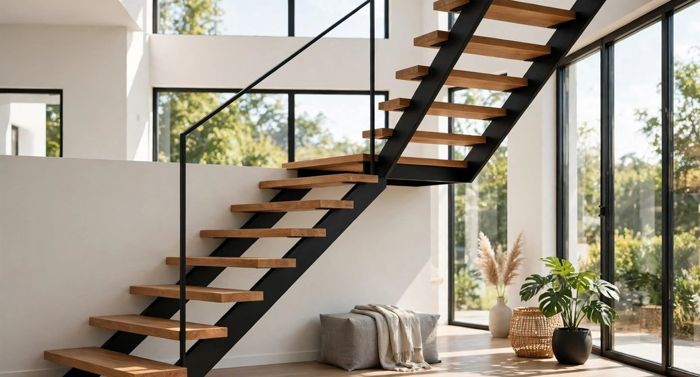
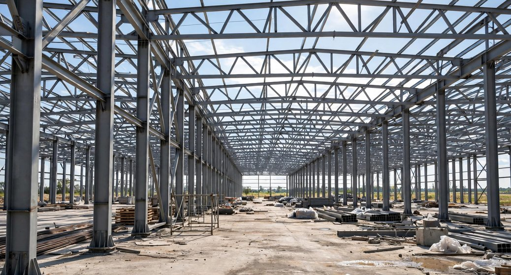
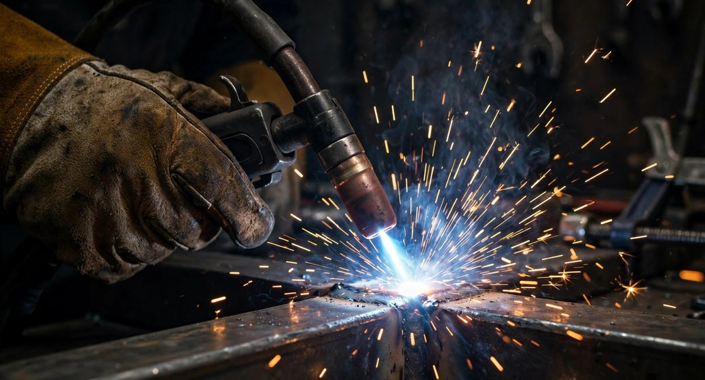

Illustrative
Steel Structures & Connections
Illustrative example of steel connections and construction metalwork.
PROJECTS & APPLICATIONS
The images below are illustrative examples of the types of work we can discuss. Verified completed projects can be added here when owner-approved project details and photographs are available.
Illustrative example of steel connections and construction metalwork.

Illustrative example of railing and architectural metal details.

Illustrative example of a welding process and metal finish.

Illustrative stair and handrail components.

Illustrative structural steel application.

Illustrative close-up of welding.
Tell us about the project and its requirements.